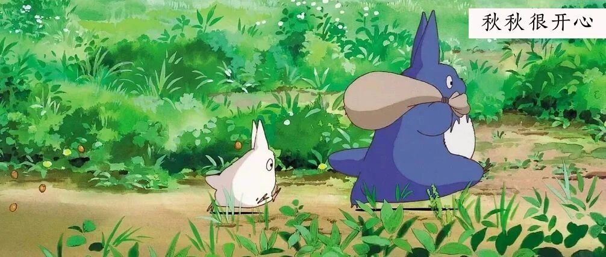

看，秋秋为了提高效率，用了这些App！
点击关注秋秋很开心
每周一篇好用APP、学习、成长干货

图：@网络
文：@秋秋
大家好，我是秋秋呀～
最近好多宝藏App没跟你们分享！从专注学习到效率提升，甚至超神奇和新鲜的都有～
唉，可别说我，我就是玩儿
1.专注崽崽

真的，还不自律的集美给我用起来！
之前老说我推荐的App安卓搜不到，那这个App安卓苹果都有。
你说专注的时候种棵树，我可能没啥感觉，但用专注的时间孵一个小动物，真的学习更有动力！


关键动物都是未知的，拆盲盒的快乐我竟然在一个专注软件中体会到了。
里面还有很多白噪音。总之，热爱小动物、喜欢未知乐趣，又无法专注到小伙伴，你们都可以试试。
2、阿里云盘

这就是我的私货了，不想分享的那种。
阿里云盘这个软件上线也就不到1个月，那速度，真的疯了！

关键还她免费，不要钱就获得1个T的大容量，下载上传都不限速。
之前没第一时间分享，1是App内测阶段，我不知道稳不稳定。
2是现在免费，不知道什么时候就开始收费了。

只能告诉大家，现在就快点抓紧时间用啊！以后万一168一年的会员，真的是不舍得。
3、背个X啊

这个软件，对于背书很慢的同学，真的太友好了。
而我，早在3年前，考研的时候就知道了。
原因，我知乎上搜背书方法，就一个人写了这个。每间隔一个单词留出空格，反复几次，你只要能填上，真的就记住了。


真没想到现在都有了这个App，也不知道是不是我当初看的那篇文章的人开发的。
总之还很谢谢他，虽然没考研到理想学校，但最后还是来了北京。
4.李跳跳

这个，算是新奇特App。
可以帮你跳过那些烦人的开屏广告！（只有安卓版）
开屏广告最可气的是，一不小心就会点进去啊，虽然每次明明都看倒计时好了、才点的，结果它还停留2秒。

总之，这个App可以还你一个绿色清新干净的上网环境～
也是免费滴！应用商店没有的直接网址搜索下载。
5、mooding

上次说到写手帐，把不开心写下来，真的是治愈心情最好的办法。
而这个使用起来很简单。我知道！一开始坚持记录总是困难的嘛。


这个你就每天选择一个最具代表的心情和一个形象，放在摩天轮上，心情立马会轻松。
摩天轮的形象，也好像在和过去说拜拜。
不擅长记录的集美，从它开始用起来！

好了，这一期App分享就到这里了～
无论什么App，能帮助我们提高效率才是最重要的。
大家一定要学会“善假于物”，才能事半功倍哦～
☕️ 更 多 内 容：


原创文章，转载请告知本人并标注来源
粉丝vx：qiuqiu5261（朋友圈更新日常）
商务合作：17865514429 （微信）
请注明来意 :)
@小红书：秋秋很开心
喜欢记得星标，让我们一起成长